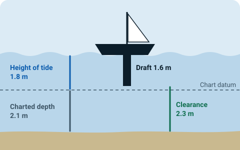

Will you float over it?
Ten of the Solent's shallow spots, from Bramble Bank and Lepe Spit to Chichester Bar and Hurst Narrows. Put in your draft and the charted depth from your own chart, and the app shows the sum with the predicted height of tide. Tide figures are predictions, so it's a check on your own working, not a replacement for it.
- Clearance now or at the time you choose, and when it's above your margin over the next 24 hours.
- Every answer opens up to show the working, line by line.
- Not sure which figure to use? The app shows you how to read the depth off your chart.
- Tide curves for Solent ports, double high waters and stands included, from UK Hydrographic Office predictions.
| Charted depth | 2.1 m | from your chart |
| Height of tide | + 1.8 m | Portsmouth, 14:30, UKHO prediction |
| Draft | − 1.6 m | your boat |
| Clearance | 2.3 m |
Above your 0.5 m margin

Next to each depth box, a short guide covers chart datum, depths and drying heights, and the small tenths figure. The app doesn't check the number you enter, so the guide helps you get it right.